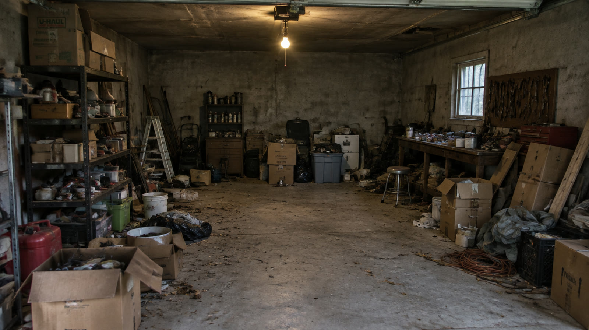

12 · Music from a prompt · Seed Audio
An original soundtrack.
“Cinematic trailer music: a pulsing synth heartbeat builds with taut strings and punchy percussion.”

12 · Sound effects · Seed Audio
Every creak and slam.
“A heavy wooden door creaks open slowly, then slams shut with an echo.”
A thumbnail that gets the click.
Nano Banana Pro